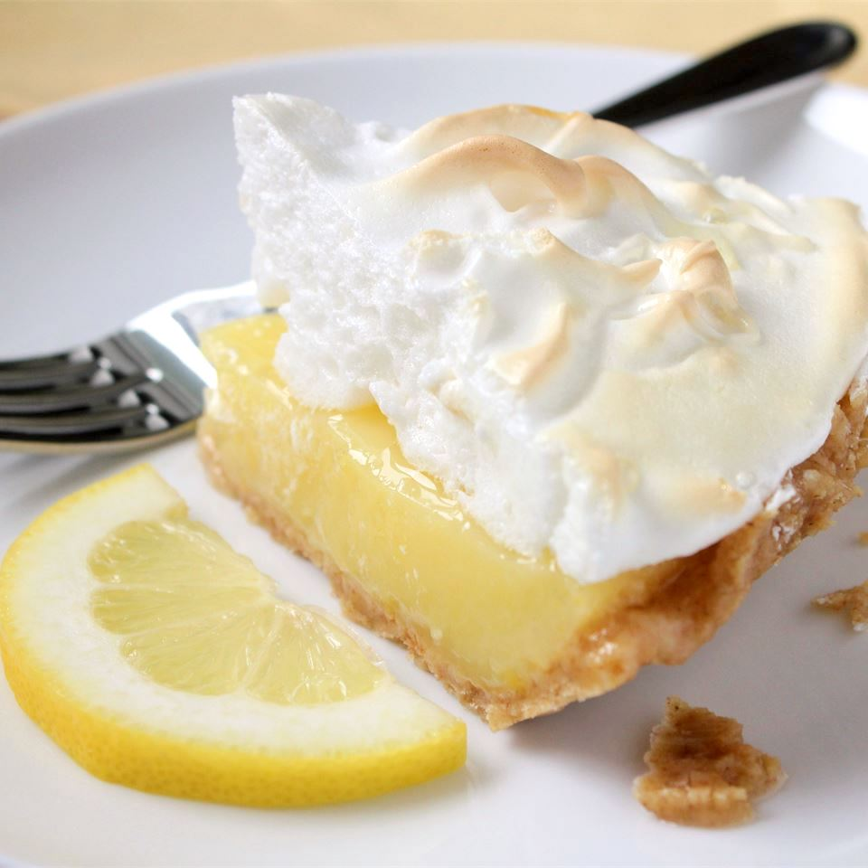

Grandma's Lemon Meringue Pie

Description
This is a very fun recipe to follow, because it is sweet and simple. This pie is thickened with cornstarch and flour in addition to egg yolks, and contains no milk. Very delicious!!
Cook: 10 mins - Total: 40 mins - Prep: 30 mins - Servings: 8 - Yield: 1 (9 inch pie)
Ingredients
- 1 cup white sugar
- 2 tablespoons all-purpose flour
- 3 tablespoons cornstarch
- ¼ teaspoon salt
- 1½ cups water
- 2 lemons, juiced and zested
- 2 tablespoons butter
- 4 egg yolks, beaten
- 1 (9 inch) pie crust, baked
- 4 egg whites
- 6 tablespoons white sugar
Nutrition Facts
Per Service 298 calories; protein 4.4g; carbohydrates 49.7g; fat 10.3g; cholesterol 110.1mg; sodium 229.2mg.
Directions
- Preheat oven to 350 degrees F (175 degrees C).
- To Make Lemon Filling: In a medium saucepan, whisk together 1 cup sugar, flour, cornstarch, and salt. Stir in water, lemon juice and lemon zest. Cook over medium-high heat, stirring frequently, until mixture comes to a boil. Stir in butter. Place egg yolks in a small bowl and gradually whisk in 1/2 cup of hot sugar mixture. Whisk egg yolk mixture back into remaining sugar mixture. Bring to a boil and continue to cook while stirring constantly until thick. Remove from heat. Pour filling into baked pastry shell.
- To Make Meringue: In a large glass or metal bowl, whip egg whites until foamy. Add sugar gradually, and continue to whip until stiff peaks form. Spread meringue over pie, sealing the edges at the crust.
- Bake in preheated oven for 10 minutes, or until meringue is golden brown.
return